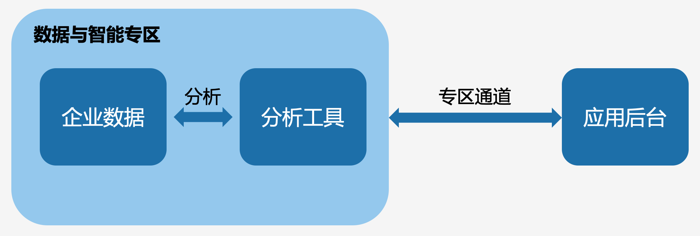

目录
专区产品框架专区使用流程专区安全机制企业数据是重要的企业资产。企业可通过对数据的分析为企业经营改善、业务流程优化、决策质量提升等提供重要支撑。同时，企业数据安全也非常重要，数据一旦泄漏将给企业带来不可估量的损失。
为了满足企业在数据安全的前提下的数据分析需求，企业微信提供了「数据与智能专区」：企业可在专区中存储企业会话内容、企业知识集等数据，并在专区中使用分析工具对数据进行分析并获取分析结果。
专区产品框架
数据与智能专区包括企业数据和分析工具两块，其中：
- 企业数据：专区中存储企业会话内容和企业知识集等数据
- 分析工具：企业可通过应用使用分析工具，并对企业数据进行分析。按照能力和来源分析工具共包括以下三种：
- 企业微信模型：企业微信提供了基础模型，包括话术推荐、客户标签、会话摘要、情感分析等模型能力，以及自定义提示词的通用模型能力，企业可通过在专区部署程序之后进行调用。
- 企业自建程序：企业需在专区中上传部署分析程序，并通过专区通道调用程序
- 企业自建模型：企业可在专区中上传部署模型，并可通过专区通道调用模型
企业的应用后台可通过专区通道使用分析工具来分析企业数据，并获得数据分析结果。
除此之外，企业还可通过智能机器人使用模型，并基于企业知识集数据完成内部知识问答。

专区使用流程
- 企业微信提供了一条专区调用通道，应用后台可以调用部署在专区中的程序，也可以让专区中的程序回调通知应用后台。
- 企业微信在专区中以SDK的方式提供了一套涉及会话记录、会话搜索、关键词命中记录、模型分析等接口，专区中的程序可以按需调用。
详细的使用说明，参见使用说明。
专区安全机制
企业的数据存储于专区中，所有挖掘分析的程序或模型都部署在专区中，在专区中完成分析的任务，完成后的脱敏结果才可传输到专区之外，以被企业应用所使用。
为保证数据安全，专区提供了以下安全机制：
- 依赖到企业会话内容或知识集的任务，都必须在专区中完成。
- 仅脱敏后的分析结果（不可包含任何会话内容），或者消息的ID可以传输到专区之外。